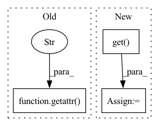

Pattern ID :41401
Before Change
edge_index, edge_weight = gf.sparse_adj_to_edge(adj_matrix)
edge_x = getattr(graph, "edge_attr", edge_weight[..., None])
edge_index = getattr( graph, "edge_index" , edge_index)
X, edge_index, edge_x = gf.astensors(node_attr,
edge_index,
edge_x, After Change
graph = gf.get(graph_transform)(self.graph)
edge_index, edge_weight = gf.get(edge_transform)(graph.edge_index, graph.edge_weight)
node_attr = gf.get(attr_transform)(graph.node_attr)
edge_attr = gf.get( edge_attr_transform) (graph.edge_attr)
X, edge_index, edge_x = gf.astensors(node_attr,
edge_index,In pattern: SUPERPATTERN
Frequency: 4
Non-data size: 3
Instances Fragment ID: 116467297
Project Name: edisonleeeee/graphgallery
Commit Name: f4e0f6dc6190b9ef4462281566952a76f42b5f0d
Time: 2021-02-09
Author: cnljt@outlook.com
File Name: graphgallery/gallery/gallery_model/pyg/pdn.py
M Class Name: PDN
N Class Name: PDN
M Method Name: process_step(5)
N Method Name: process_step(4)
M Parent Class: Trainer
N Parent Class: Trainer
M File Name: graphgallery/gallery/gallery_model/pyg/pdn.py
N File Name: graphgallery/gallery/gallery_model/pyg/pdn.py
M Start Line: 22
M End Line: 32
N Start Line: 21
N End Line: 31
Before Change
"set the dataloader with .set_loaders(...)"
)
dataset_size = getattr( self, "dali_epoch_size" , None) or len(dataloader.dataset)
dataset_size = self.trainer.limit_train_batches * dataset_size
After Change
folder = os.path.join(self.extra_args["data_dir"], self.extra_args["train_dir"])
else:
folder = None
no_labels = self.extra_args.get( "no_labels", False)
data_fraction = self.extra_args.get("data_fraction", -1.0)
dataset_size = compute_dataset_size(
dataset=dataset, Fragment ID: 116467298
Project Name: vturrisi/contrastive-learning
Commit Name: eb07a9c7c2872efb1ae83767f59a67fa616a7652
Time: 2022-05-02
Author: vt.turrisi@gmail.com
File Name: solo/methods/base.py
M Class Name: BaseMethod
N Class Name: BaseMethod
M Method Name: num_training_steps(1)
N Method Name: num_training_steps(1)
M Parent Class: pl.LightningModule
N Parent Class: pl.LightningModule
M File Name: solo/methods/base.py
N File Name: solo/methods/base.py
M Start Line: 383
M End Line: 392
N Start Line: 362
N End Line: 384
Before Change
if _LOCAL.map_f is not None and _LOCAL.map_inplace:
_LOCAL.map_f(self)
annotations = getattr( self, "__annotations__" , {})
fields = vars(self)
tree = {}
not_tree = {}After Change
if field not in self.__annotations__ and isinstance(value, TreeObject):
self.__annotations__[field] = type(value)
annotation = self.__annotations__.get( field, None)
if annotation is None:
not_tree[field] = value
Fragment ID: 116467293
Project Name: cgarciae/treex
Commit Name: f72869053581929faeb436e85929b944cc777bfd
Time: 2021-09-03
Author: cgarcia.e88@gmail.com
File Name: treex/tree_object.py
M Class Name: TreeObject
N Class Name: TreeObject
M Method Name: tree_flatten(1)
N Method Name: tree_flatten(1)
M Parent Class:
N Parent Class:
M File Name: treex/tree_object.py
N File Name: treex/tree_object.py
M Start Line: 62
M End Line: 69
N Start Line: 66
N End Line: 71
Before Change
"set the dataloader with .set_loaders(...)"
)
dataset_size = getattr( self, "dali_epoch_size" , None) or len(dataloader.dataset)
dataset_size = self.trainer.limit_train_batches * dataset_size
After Change
else:
folder = None
no_labels = self.extra_args.get("no_labels", False)
data_fraction = self.extra_args.get( "data_fraction", -1.0)
dataset_size = compute_dataset_size(
dataset=dataset,
folder=folder, Fragment ID: 116467292
Project Name: vturrisi/contrastive-learning
Commit Name: eb07a9c7c2872efb1ae83767f59a67fa616a7652
Time: 2022-05-02
Author: vt.turrisi@gmail.com
File Name: solo/methods/linear.py
M Class Name: LinearModel
N Class Name: LinearModel
M Method Name: num_training_steps(1)
N Method Name: num_training_steps(1)
M Parent Class: pl.LightningModule
N Parent Class: pl.LightningModule
M File Name: solo/methods/linear.py
N File Name: solo/methods/linear.py
M Start Line: 199
M End Line: 208
N Start Line: 184
N End Line: 206